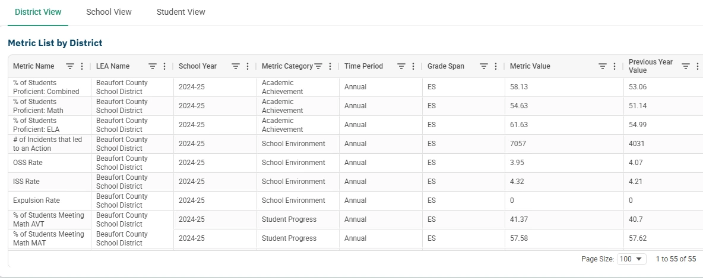
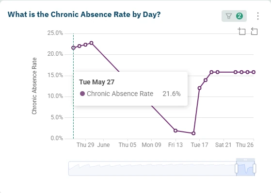
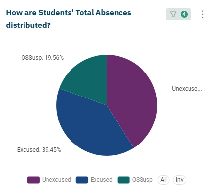
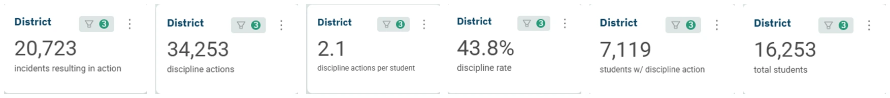

Administrator Navigator
A focused look at Administrator Navigator through an early learning lens. This allows for continued filtering down to PreK and Kindergarten subsets across dashboards and visualizations.
Questions to explore
- What do district, school, and student views show for PreK or kindergarten?
- Which students are behind the early learning metric I select?
District, school, and student-level metrics, scoped to PreK/K
The same Metrics Dashboard that rolls up a district's full K-12 picture will filter down to just PreK and Kindergarten. The grade-level filter is the whole trick.
- Filtering
District of choice, school year, and grade level. Select -1 and 0 to isolate PreK and Kindergarten respectively.
- Three views
District-level overview, school-level overview, and student-level overview, all filterable to the same grade band.
- Metrics included
% of students proficient (by subject, by gender), ISS/OSS rate, and student-group-level data broken out by gender, 504/non-504, and ELL status.

Questions to explore
- What do KRA or other early learning results show for the selected year and season?
- How do results differ across schools or student groups?
Reading KRA, and other early learning assessments
The Assessment Dashboard matches its assessment list to whatever a district testing/accountability coordinator loaded to Ed-Fi. For early learning, that typically means the Kindergarten Readiness Assessment (KRA). The walkthrough below shows how to filter down to it.
South Carolina's kindergarten-entry readiness assessment, given once near the start of the K year. It's the assessment demonstrated in the walkthrough below, filtered by Test Season, Subject, and Test Grade.
An ongoing, observation-based assessment some early-childhood programs use across the year rather than at a single point in time. If a district has GOLD data loaded to Ed-Fi, the same "Select Assessment" filter should surface it the way it surfaces KRA.
Once the filters are set, the dashboard shows the scale score distribution, school by school results, a sortable student level table, and performance broken out by student group.
Filtering the Assessment Dashboard, step by step
The same filter panel works for any exam in Ed-Fi, KRA included. Step through it below, or click the screen to view it at full resolution.
Questions to explore
- What does attendance look like when I scope the dashboard to early learning?
- How can I carry the same PreK or kindergarten focus into another dashboard?
Carrying the Early Chilhood Learning focus into the rest of Admin Navigator
Administrator Navigator allows for the same subset to be filtered in every dashboard by selecting by grade level, and at times, by assessment. Continue to comb through the data knowing your selected class, group, or student has clean, populated data.

Compare chronic abscense rate across time
Set the timeline slider to cover the year, months, weeks, or even days to compare chronic abscense rates at both a district and school level.

Break down attendances into the proportion of absence types
This pie graph shows the proportion breakdown for all absence types for the district. We see unexcused absences run highest for this district, which may prompt administrators and principals to investigate why.

See early incidents by District, School, or Student
Behavior's district-to-student drill-down provides an at a glance look at the incident and incident action stats for that school district.
Not part of the early learning view
AVT/MAT predictions are built on summative assessment history that starts at grade 3, so this dashboard has nothing to show at -1 / 0.
Practice Use Cases
Work through these example use cases and ad-hoc questions. Try it yourself, and the look at the suggested approach for insights.
Find your highest-performing kindergartners
Assessment DashboardFilter to your LEA, the most recent school year, Assessment = Kindergarten Readiness, and Test Grade = K. Select all available Test Seasons first, then narrow down once you see what's populated. Then use the student-level detail view to sort by scale score, highest to lowest.
Suggested approach
Compare PreK/K discipline by gender
Metrics DashboardSet Grade Level to -1 and 0, use school year 2025-26 (2026-27 is still mostly empty since school just started for most districts), pick ISS/OSS Rate as the metric, and compare the two Birth Sex groups. Do early discipline rates already show a gap?
Suggested approach
Which early grades are missing the most school?
Chronic AbsenteeismUsing the district-level Chronic Absenteeism view, filter Grade Level to -1 and 0, set the school year to 2025-26 (2026-27 is still mostly empty since school just started for most districts), and rank schools by chronic-absenteeism rate. Which building would you visit first?
Suggested approach
Check the gap for English Language Learners
Assessment DashboardIn Performance by Student Group, compare KRA composite scores for ELL kindergartners against their non-ELL peers. Is the gap bigger or smaller than you expected?
Suggested approach
Build a two-dashboard watch list
Assessment + Metrics DashboardPull your lowest KRA composite scorers from the Assessment Dashboard, then check the same students' ISS/OSS rate in the Metrics Dashboard. Do the same names show up in both lists?